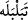

şudur: Nûh (a.s.) Cûdî dağının eteklerine indiğinde bir köy kurdu ve adına “seksen”
anlamına gelen “semânîn” ismini verdi. Bir gün baktı ki köy halkının lisânları seksen
dile ayrılmıştır. Kelime
(  ) “tebelbele” kökündendir. Bu dillerden biri Arapça’dır. Halk birbirinin dilini
anlamıyor. Böylece bir dil farklılaşması olmuştur. Kurtubî Tefsîri’nde böyle
anlatılmaktadır.
“Hârût ve Mârût” yukarda bahsi geçen iki melektir. Alem ve yabancı kelime olduğu
için gayr-ı munsarıftırlar. O iki melek hakkında anlatılan içki içme, kan dökme, zina
etme, cinâyet işleme ve puta secde yapma şeklindeki hikâyeler itibâr edilecek şeyler
değildir. Çünkü bu hikâyelerin odak noktasını teşkîl eden Yahûdî rivâyetlerinde akla ve
nakle muhâlif şeyler bulunmaktadır. Kim bilir belki de bunlar, çeşitli misâller ve
rumûzlardır ki onlarla ince akıl sâhibi kimseleri teşvîk ve korkutma yoluyla irşâd hedefi
güdülmüştür.
İşârî olarak iki melekten murâd, nazarî ve amelî akıldır. “Zühre” diye isimlendirilen
kadın ise ilk yaratılışında temiz olan nefs-i nâtıkadır. Bu akılların, nefsin peşine
düşmesi neş’et-i âhıre’de ona isti’dâdına uygun şeyler öğretmeleridir. Nefsin onları
günaha sürüklemesi ise, onları mizâc-ı tabîî hükmüyle kirli süfliyyete teşviktir.
Onlardan öğrendiği ile semâya yükselişi nefsin Mele-i A’lâ’ya urûcu ve nasîhat ve
insâfı sebebiyle mukaddes varlıklara kavuşmasıdır. Bu konuda sûfî müfessirler daha
pek çok görüşler zikretmişlerdir.
Bu sözleri toplayan fakîr (Bursevî) şöyle derim: Erbâb-ı haber ve’l-beyânın şuhûd ve
ıyân ehlinin kitaplarının pek çoğunu araştırdım ve onların pek çoğunun Hârût ve Mârût
kıssası ile dolu olduklarını gördüm. Böylesine büyük topluluğun, aslı yahûdîlere
dayanan bir rivâyetin doğruluğu konusunda ittifak etmesi nasıl mümkün olabilir? Ben
derim ki: Meleklerin Allah’a isyan ve Hakk’ı inkâr etmemeleri, gece gündüz onu
zikredip Allah’a iftirada bulunmamaları ve emrolundukları şeyleri eksiksiz yerine
getirmeleri şeklinde vasfedilmesi, onların isyân isti’dâdlarının da varlığına delîldir.
Eğer melekler böyle olmasalardı, medholunmazlardı. Çünkü hiç kimse mümkün
olmayan bir özelliği sebebiyle medholunmaz. Bilakis onların itâatkâr olmaları,
tabîatlarından gelen bir özellik, isyana dalmaları ise, beşerin aksine bir zorlamadır. et-
Teysîr’de böyle anlatılmıştır. Onların iniş sebebleri peygamberlerle ilgili şüpheleri
izâle ise de bu anlatılanlar, onların da günaha düşebilmelerinin cevâzını gösterir.
Melekler, İdrîs (a.s.) zamanında insanların çok az ibâdet ettiğini ve çok günah
işlediğini söyleyerek ayıpladılar. O zaman Cenâb-ı Hak onlara: “Eğer onlar gibi sizi de
yeryüzüne indirseydim ve onlara verdiğim bâzı hasletleri size de verseydim, aynı
şeyleri siz de yapardınız” buyurdu. Melekler: “Ya Rabbi, biz seni tesbîh ederiz; hâşâ
biz asla sana isyân etmeyiz” dediler. Allah Teâlâ da onlara: “Öyleyse aranızdan iki
melek seçin, onları dünyaya indireyim” buyurdu. Onlar da aralarında “Hârût ve
Mârût’u” seçtiler. Bu ikisi meleklerin en sâlih olanlarından ve en çok ibâdet
edenlerindendi. Onlara da beşerî hasletler yükletilerek dünyaya indirildiler ve